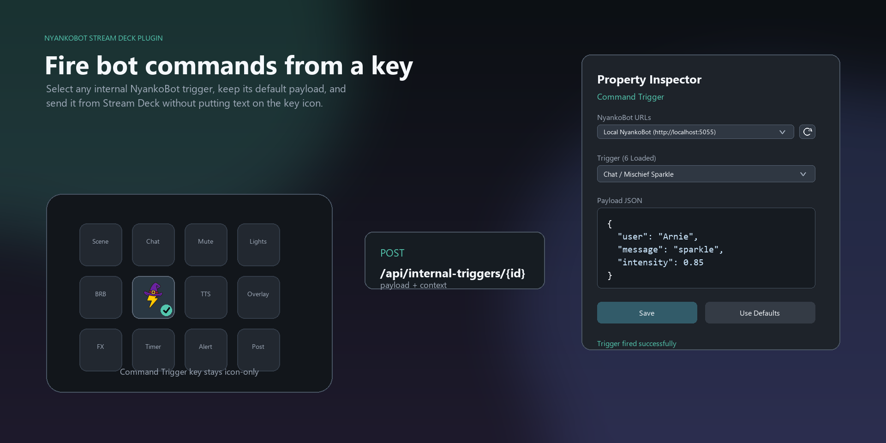
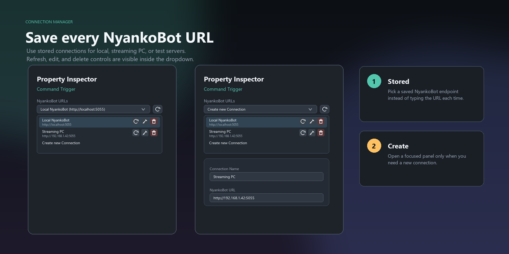

Optional add-on
Stream Deck Plugin
The unofficial NyankoBot plugin adds a Command Trigger action to Stream Deck. Pressing its key runs a saved NyankoBot trigger, including its actions and any overlay bindings.
Download and install
The plugin is a separate download below the NyankoBot app builds on the Downloads page. It is distributed directly through GitHub Releases, not through the Elgato Marketplace.
- Install and run NyankoBot. Create at least one enabled Command Trigger with the actions or overlay binding you want the key to run.
- Download the
.streamDeckPluginfile from the Downloads page. The current package was released with NyankoBot 0.6.10; use the newest version shown there. - Open the downloaded file to install it in the Stream Deck app. Look for the
NyankoBotcategory and itsCommand Triggeraction.
The plugin manifest requires Stream Deck 7.1 or newer on Windows 10+ or macOS 12+. NyankoBot itself must be running on a computer the Stream Deck app can reach. A Streamer.bot connector is not required for this plugin.
Configure a key
- Drag
NyankoBot → Command Triggeronto a Stream Deck key. - In the property inspector, choose an entry under
NyankoBot URLs.Local NyankoBot (http://localhost:5055)works when both apps run on the same computer. For another computer, open that menu, selectCreate new Connection, enter a name and a NyankoBot URL reachable from the Stream Deck computer, then selectSave Connection. - Use the refresh button beside the URL selector. The
Triggermenu loads enabled Command Triggers from that NyankoBot instance. - Choose a trigger. Select
Use Defaultsto load its suggested payload, adjust the JSON if needed, then selectSave. - Press the key. A checkmark indicates the request succeeded; an alert indicates it failed. Check the trigger's
Historyin NyankoBot for the run and its actions.


Payload JSON
Payload JSON is an object whose fields become inputs for the trigger. Use {} when no extra values are needed. For example, {"text":"Hello from Stream Deck"} supplies {{text}} to later actions and overlay items. Use Defaults fills an example based on the selected trigger's actions, variables, and overlay sources.
After changing the payload, select Save. The plugin keeps the selected trigger and payload on that key. The connection manager can save multiple NyankoBot URLs so different keys can target different instances.


If a key does not work
- No triggers in the menu: confirm NyankoBot is running, the selected URL is correct, and the saved Command Trigger is enabled. Then refresh the list.
- Key shows an alert: confirm the URL is reachable from the Stream Deck computer, the trigger is still enabled, and
Payload JSONis a valid object. Check NyankoBot trigger History and logs for the returned error. - Actions run but nothing appears on stream: open the correct overlay in OBS and check that the trigger is attached to a binding with a displayable item.
The plugin calls NyankoBot directly. For general app setup, use Download & Install; for action and binding behavior, use Action Reference and Binding Editor.